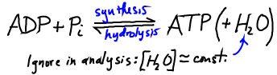
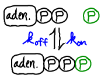
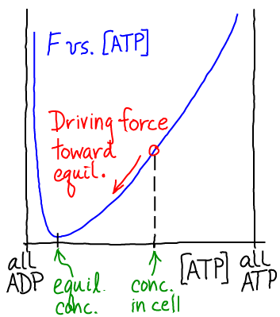

ATP does not store free energy because of a "high energy phosphate bond" or because heat is released upon ATP hydrolysis - even though these descriptors themselves may be accurate. Rather, such details of the ATP molecule (which, presumably, are dominated by the proximity of like-charged phosphate groups) lead to an equilibrium which greatly favors ADP formation. That is, if both ATP and ADP are present in a solution, then after enough time very little ATP will remain. (How much time is 'enough' will depend on whether a catalyst is present.)

As with any activated carrier, to understand ATP we first examine the equilibrium point - which will serve as a reference point for understanding the non-equilibrium conditions prevailing in the cell. In equilibrium, the decomposition and synthesis of ATP will exactly balance. \begin{equation} \label{equil} \conc{ADP} \conc{Pi} \, \kon = \conc{ATP} \, \koff , \end{equation} where $\koff$ should be understood as an effective rate constant incorporating water's effects (see Exercises, below). In exact analogy with a binding analysis, we can re-write this as \begin{equation} \label{kd} \frac{ \conceq{ADP} \, \conceq{Pi} }{ \conceq{ATP} } = \frac{ \koff }{ \kon } \end{equation}

ATP is an ideal carrier because a lot of free energy is stored when both ADP and ATP are present in reasonable cellular concentrations. That is, at typical cellular concentrations $\cc{\cdots}$, we have \begin{equation} \label{cellconc} \frac{ \cc{ADP} \, \cc{Pi} }{ \cc{ATP} } \ll \frac{ \conceq{ADP} \, \conceq{Pi} }{ \conceq{ATP} } . \end{equation} As sketched above, this non-equilibrium condition creates a driving force toward equilibrium.The cell does not allow ATP and ADP to mutually equilibrate (i.e., reach the free energy minimum). Instead the cell is perpetually synthesizing new ATP from nutrients, creating a flow of free energy through the system in what we could call the big energy cycle of life.
Note that, as suggested in the sketch above, ADP could act as a carrier of free energy if it were maintained at sufficiently high concentration (beyond the equilibrium point, to the left in the sketch). Needless to say, the cell is not set up to use energy stored in ADP!
Appreciating ATP as an ordinary activated carrier enables us to re-envision molecular motors as simple enzymes that happen to couple catalysis to translation. You can consider a thought experiment studying motor motion near the ADP/ATP equilibrium.